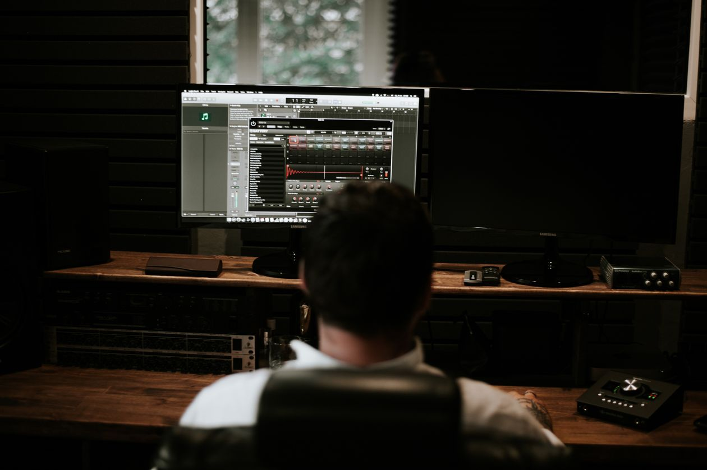

Production · Remix · Co-write — for labels & artists
The drop is the last 5% of the work.
I’m Dario Venn, a producer in Rotterdam. The other 95% is arrangement, sound selection and knowing what to leave out — and it’s all on this page in print: the fees, the stems, the timelines, and the arrangements themselves, playable before you book anything.

01 — Session player
Play the arrangement, not a showreel.
What you’re hearing: each arrangement is synthesised live in your browser — kick, hats, bass and lead generated from the section map printed on its timeline. These are demonstration renderings of the arrangements, not the mastered releases, and nothing plays until you press play.
Select a track, press play. Tap a section to jump straight to it.
02 — Release register
Everything on the player, on paper.
Lengths are worked out from the arrangement itself — bars × tempo — not rounded for a press release. The same numbers drive the player above.
| Title | Tempo | Key | Length | Format | Status |
|---|---|---|---|---|---|
| Low CeilingOriginal — written for a 300-cap room | 126 BPM | F minor | 2:02 | Single + extended club mix | Released · 2025 |
| FreightOriginal — rolling, no breakdown longer than 16 bars | 130 BPM | G minor | 1:58 | EP track | Released · 2025 |
| GlasshouseCo-write — built under an existing topline | 122 BPM | A minor | 1:50 | Single | Released · 2026 |
| Second ShiftOriginal — long build, written for peak-time sets | 128 BPM | D minor | 2:15 | Single + instrumental | Released · 2024 |
| Night Freight (VENN Remix)Remix — six-day turnaround, vocal stem only | 132 BPM | G♯ minor | 2:11 | Remix package | Released · 2026 |
| Warehouse TapesOriginal — three tracks, still in session | — | — | — | EP | Forthcoming · Demo on release |
03 — Fees
Prices in print, before the first call.
| Engagement | What it covers | Fee |
|---|---|---|
| Full production | Original track from brief to pre-master: arrangement, sound design, mix. Includes extended club mix and instrumental. | from €3,800 |
| Remix | Rework of your track from its stems, delivered as club + radio edits. Standard turnaround 3 weeks. | from €2,200 |
| Co-write / topline production | A day in session building the track under your melody or lyric, in person or remote, files shared same day. | €450 / day |
| Mix & master polish | Your finished production, mixed for club systems and mastered to a pre-master your mastering engineer can use. | from €600 |
What moves the price
- Stems
Full grouped stem set (drums / bass / music / vocal, printed at delivery) adds €250 — it is a day of printing and checking.
- Exclusivity
A buyout or exclusive licence is priced on top of the production fee and agreed in writing before work starts.
- Turnaround
Delivery inside 10 working days adds 25%. The six-day remix on the Work page was booked at this rate.
- Revisions
Two rounds of arrangement revisions are included in every fee. Further rounds are billed at the day rate, pro-rata.
04 — How a booking runs
Four stages, no surprises.
STAGE 01
Brief & references
You send two or three reference tracks, the deadline and what the record has to do — floor, radio, sync. I reply with a written plan and a fixed quote within two working days.
STAGE 02
Demo arrangement
A full-length demo arrangement — the same section map you can hear in the player above — before any sound-design time is spent. If the arrangement is wrong, we fix it here, where it’s cheap.
STAGE 03
Full production
Sounds are built, the mix is checked on two club PAs as well as the studio monitors, and you hear two revision rounds against the demo.
STAGE 04
Stems & pre-master
You receive the pre-master, club and radio edits, instrumental and the stem set — every file named, dated and listed on a delivery sheet. Details on the Studio page.
“The label gave him six days and a single vocal stem. He sent back a record our resident opened with for a month — and the stems arrived cleaner than most six-week jobs.”
Have a track that needs the other 95%?
Next production slot opens January 2027. Briefs are answered within two working days.